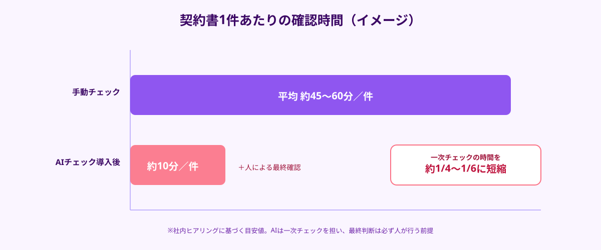
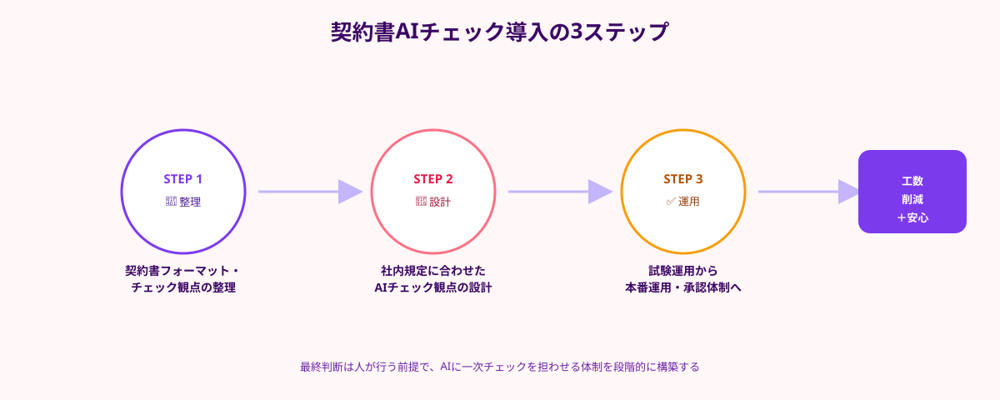

「契約書のチェックに毎回時間がかかる」「担当者によって見ている観点がバラバラで、重要な条項の見落としに気づけない」——契約書のリーガルチェックは、多くの中小企業にとって慢性的な悩みです。顧問弁護士に毎回依頼するほどの予算はなく、かといって担当者の経験だけに頼るのはリスクが大きい、という板挟みの状態に陥っている企業は少なくありません。
この記事では、生成AIを活用した契約書AIチェックツールの基本的な仕組みと、正社員採用や常時契約のコンサルティングではなくスポット外注でその導入を実現する3つのステップを解説します。
中小企業の契約書チェックで起きている課題
契約書チェックの課題は、大きく3つに整理できます。1つ目は属人化です。チェックの観点が担当者の経験や知識に依存しており、異動や退職が起きた瞬間にチェック品質が大きく下がってしまいます。2つ目は工数の重さです。取引先ごとに異なるフォーマットの契約書を1条ずつ読み込み、リスク条項や欠落条項を確認する作業は、件数が増えるほど現場の負担になります。3つ目は見落としリスクです。多忙な中で確認すると、損害賠償の上限がない、自動更新条項に気づかない、といった重要な条項を見落としたまま契約してしまうケースが起こりえます。
顧問弁護士に都度レビューを依頼すれば質は確保できますが、1件あたりのコストと納期がかかるため、すべての契約書をカバーするのは現実的ではありません。ここに、AIによる一次チェックを組み込む余地があります。
契約書AIチェックツールとは何か
契約書AIチェックツールとは、生成AI（LLM）が契約書の条文を読み込み、リスクのある条項の検出・欠落している条項の指摘・条文の平易な要約などを自動で行う仕組みを指します。あらかじめ「自社にとって不利な条項のパターン」や「必須で入れておきたい条項」をAIに学習・指示しておくことで、担当者の経験に依存しない一次チェックが可能になります。

重要なのは、AIチェックツールは最終判断を代替するものではなく、一次チェックを高速化し、人が確認すべき箇所を絞り込むための仕組みだという点です。AIがリスク箇所を洗い出し、人（社内担当者または顧問弁護士）が最終確認を行うという二段構えにすることで、工数とリスクの両方を抑えられます。
契約書AIチェックをスポット外注で導入する3ステップ
契約書AIチェックツールは市販のSaaSを契約する方法もありますが、自社の契約書フォーマットや業界特有のチェック観点に合わせてカスタマイズしたい場合、スポット外注でAI開発の知見を持つエンジニアに依頼する方法が現実的です。
STEP1｜既存の契約書フォーマット・チェック観点を整理する
まず、自社が日常的に扱う契約書の種類（業務委託契約・秘密保持契約・取引基本契約など）と、これまで見落としで問題になったことがある条項・必ず確認している条項を洗い出します。ここを整理しておくことで、AIに指示する「チェック観点」の精度が大きく変わります。
STEP2｜社内規定に合わせたチェック観点をAIに設計する
STEP1で整理した観点を、生成AIへの指示（プロンプト）やチェックリストとして設計します。「損害賠償の上限有無」「自動更新条項の有無」「秘密保持の期間」など、自社にとって重要な項目を優先的にチェックさせる仕組みを構築します。社内の法務知識とAI実装の両方が必要なため、このカスタマイズ部分こそスポット外注の知見が活きる工程です。
STEP3｜試験運用から本番運用への移行と承認体制の確立
過去にチェック済みの契約書でAIの出力結果を検証し、見落としや誤検知がないかを確認します。問題がなければ、「AIが一次チェック→担当者が最終確認」という承認フローを正式な業務プロセスとして組み込み、本番運用に移行します。

よくある失敗と対策
契約書AIチェックの導入でつまずきやすいポイントには、共通のパターンがあります。
- AIの判断をそのまま最終承認に使ってしまう：AIチェックはあくまで一次チェックであり、最終的な契約締結の判断は必ず人が行う体制を残す必要がある
- チェック観点を自社の業界に合わせずに導入する：汎用的なチェックリストのままでは、業界特有のリスク条項を拾えず精度が下がる
- 機密性の高い契約書をそのまま外部のAIサービスに読み込ませてしまう：取引先情報や金額が含まれる契約書を扱う場合は、データの取り扱い・保存先について事前に確認しておくことが欠かせない
💡 導入を成功させるコツ
「AIに全部任せる」のではなく、「人が見るべき箇所をAIに絞り込んでもらう」という役割分担を最初に決めておくことが、契約書AIチェック導入を社内に定着させる最大のポイントです。
内製・顧問弁護士・スポット外注のコスト比較
契約書AIチェックの仕組みを社内で内製しようとすると、自社にAI開発の知見を持つ人材がいない限り時間がかかります。一方、すべての契約書を顧問弁護士に都度依頼する方法は、確実性は高いものの件数が増えるほどコストがかさみます。
そのため、「カスタマイズされたAIチェック環境を構築する部分」だけをスポット外注に切り出し、最終判断は社内または顧問弁護士が担うという分担が、コストと確実性のバランスが取りやすい選択肢になります。週末や隙間時間で対応できるAI開発の経験を持つ副業エンジニアであれば、固定費をかけずに必要な範囲だけ依頼できます。
🔧 「契約書チェックの工数を減らしたい」企業様へ
ANKENでは、自社の契約書フォーマットに合わせたAIチェック環境の構築を、固定費ゼロ・週末対応のエンジニアとスポットマッチングで依頼できます。
まとめ・ANKENへのご相談
契約書AIチェックは、「属人化したリーガルチェックを仕組み化し、見落としリスクと確認工数を同時に減らす」ための現実的な手段です。すべてをAIに任せるのではなく、AIに一次チェックを担わせ、人が最終確認を行う体制を整えることで、無理なく社内に定着させることができます。
ANKENでは、自社の契約書フォーマットやチェック観点に合わせたAIチェック環境の構築を、スポット外注で依頼できます。「契約書チェックに時間がかかっている」「見落としが不安」という企業様は、お気軽にご相談ください。
自社フォーマットに合わせたAIチェック環境の構築を、固定費ゼロ・週末スポットから依頼可能です。
👉 無料でスポット依頼を相談する初回相談は無料です。要件が固まっていなくてもOKです。